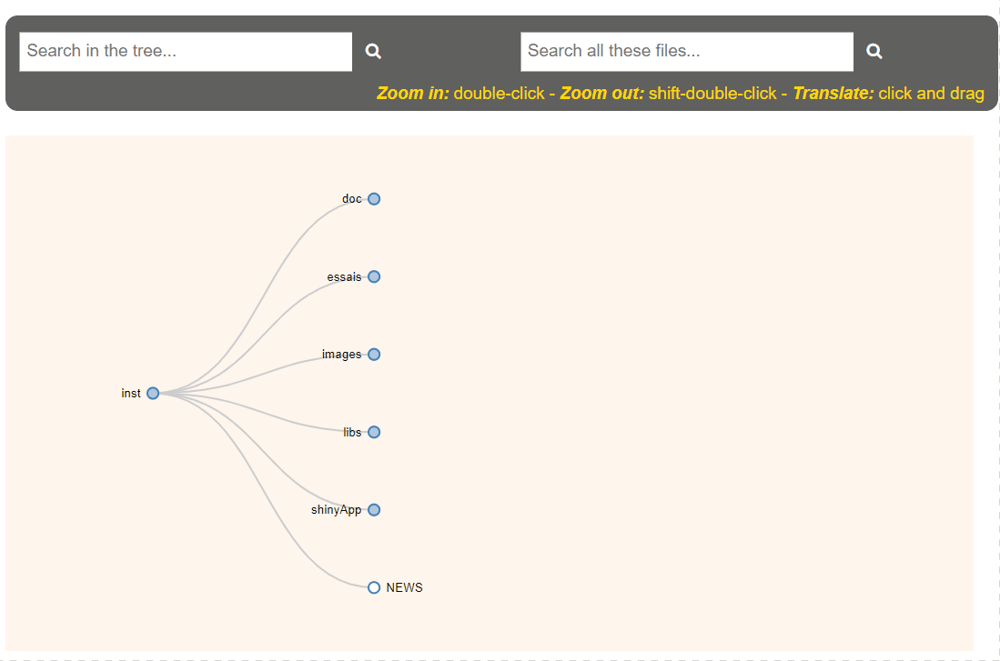
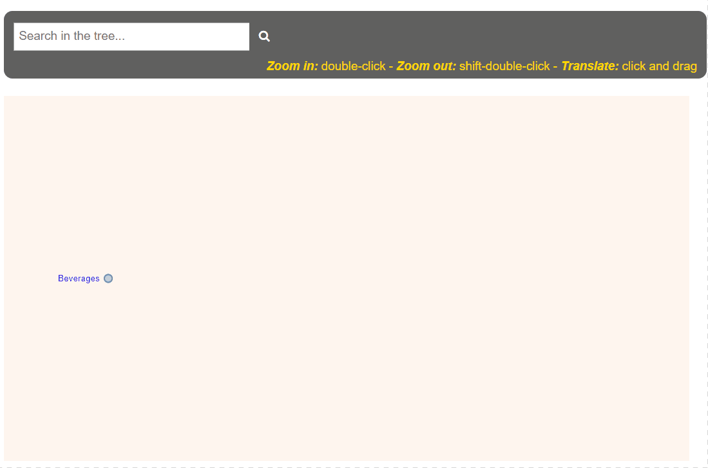

Hierarchical data visualization with Shiny and D3
Posted on May 20, 2022
by Stéphane Laurent
I refreshed my old package ‘dir2json’ (5 years old). It uses a Haskell DLL and can only work on Windows. You can install it from Github:
remotes::install_github("stla/dir2json")This package contains two Shiny apps. The first one allows to represent a folder structure as a tree network diagram (called a Reingold-Tilford tree), thanks to the amazing JavaScript library ‘D3’:
library(dir2json)
# don't forget to limit the depth if the folder is deep!
shinyDirTree(dir = "inst", depth = 3)
As you can see, it also allows to search a file in the tree. And it is possible to zoom and to drag.
This Shiny app was already included in the original version of the package. The second Shiny app is new. It is similar to the first one, but instead of a folder, it allows to represent any dataset with a hierarchical structure:
library(dir2json)
dat <- tibble::tribble(
~level1, ~level2, ~level3, ~level4,
"Beverages", "Water", "", "",
"Beverages", "Coffee", "", "",
"Beverages", "Tea", "Black tea", "",
"Beverages", "Tea", "White tea", "",
"Beverages", "Tea", "Green tea", "Sencha",
"Beverages", "Tea", "Green tea", "Gyokuro",
"Beverages", "Tea", "Green tea", "Matcha",
"Beverages", "Tea", "Green tea", "Pi Lo Chun"
)
shinyDataTree(dat, root = FALSE)